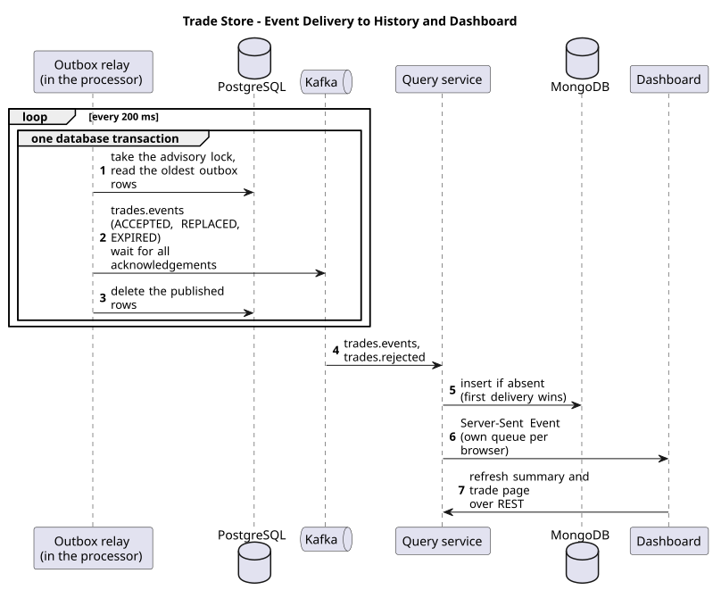
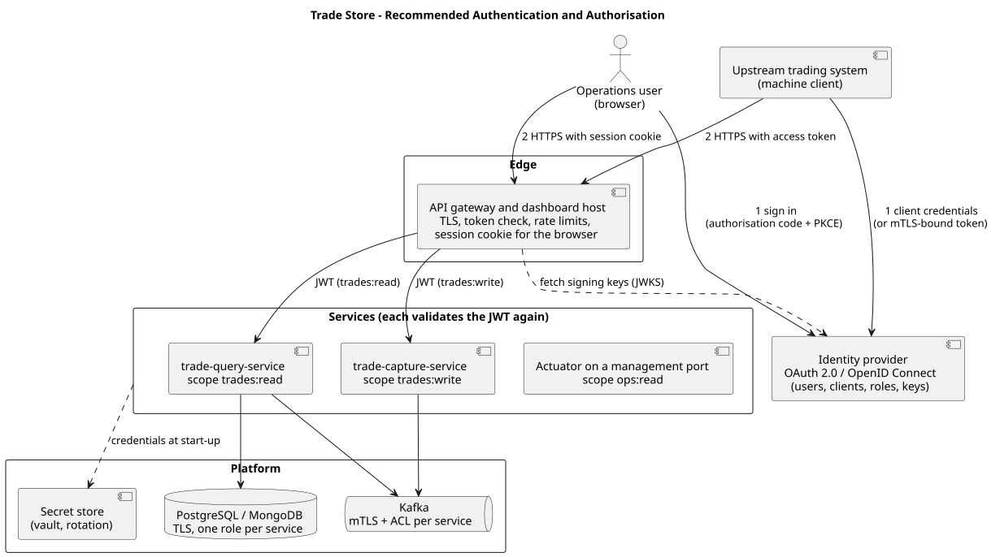

Implemented through phase 8, with code-review steps 1 to 4 and demo security hardening done; phase 9 (load run and tuning) on hold
Source
github.com/vijaydixitffis/dws-trade-app
Stack
Java 21, Spring Boot 4.1, Apache Kafka, PostgreSQL, MongoDB, React
Contents
1. Problem statement
2. Scope, goals and decisions
3. Solution overview and components
4. Technology choices
5. Runtime flows
6. Design of the three rules
7. Data design
8. Deployment view
9. Non-functional requirements and how the solution meets them
10. Quality, testing and delivery pipeline
11. Known issues, risks and next steps
12. Recommended authentication and authorisation design
13. Traceability from requirements to design and tests
Appendix: interfaces and configuration
1. Problem statement
The assignment asks for a Java application using Spring Boot and a streaming tool, with both a SQL and a NoSQL database. It must be built test-first with JUnit, delivered through a pipeline (GitHub Actions preferred) that runs regression tests and an open-source vulnerability scan, and the build must fail on critical or blocker vulnerabilities. PlantUML diagrams are requested where feasible.
The business problem is stated as follows.
Thousands of trades are being sent to a single store, through any method of transmission. The objective is a trade store that organises and stores each trade in a specific sequence.
Each trade carries: Trade Id, Version, Counter-Party Id, Book-Id, Maturity Date, Created Date and an Expired flag (Y or N). The store must enforce three rules.
#
Rule from the assignment
1
A trade with a lower version than the stored one is rejected with an exception. A trade with the same version replaces the current record.
2
A trade whose maturity date is earlier than today is rejected.
3
When a trade's maturity date has passed, the store automatically marks it as expired.
The sample table in the assignment shows several versions of the same trade stored side by side (Trade T2 appears at version 2 and version 1), which tells us that the store keeps history rather than only the latest version.
What makes it hard
Volume and concurrency. Many trades arrive at once, from any source, and several versions of one trade may be in flight together.
Order sensitivity. Rule 1 depends on the order trades arrive in; a lower version arriving late must not overwrite a higher one, even when two processors work in parallel.
Time-based behaviour. Rules 2 and 3 depend on "today", and rule 3 must act without any trade arriving.
No lost trades. A trade accepted for processing must end up either stored or rejected with a recorded reason.
2. Scope, goals and decisions
In scope
A trade capture API, a streaming backbone, a trade processor that enforces the three rules, a SQL trade store, and a NoSQL history of outcomes.
Additions requested by the sponsor: a trade posting simulator and a dashboard UI.
A test-first build, a delivery pipeline with a vulnerability gate, and PlantUML diagrams.
Out of scope for this release
Production-grade authentication (simple Basic auth with scope-based authorisation is used for demo purpose; section 12 gives the recommended design), an API gateway (not used in the demo scope), TLS, multi-broker Kafka and database replication in the supplied Compose file, Kubernetes manifests, and measured load-test figures (phase 9).
Decisions agreed with the sponsor
Topic
Decision
Streaming tool
Apache Kafka, one container with no extra coordination service, so it can be demonstrated locally, in the pipeline and at a client site with Docker alone.
Databases
PostgreSQL as the system of record; MongoDB for the history of store changes and rejections.
Packaging
Separate Spring Boot services in one Maven multi-module repository, plus a React dashboard.
Rejections
Domain exception, a rejected-trades topic, stored in MongoDB with the reason, shown on the dashboard; the capture API also answers HTTP 422 at once when it can decide alone (past maturity).
Version history
Every version of a trade is kept, one row per (trade id, version).
"Today"
The date in the server's own time zone; an administrator may configure another zone.
Maturing today
Accepted. Only a date earlier than today is rejected (default, not objected to).
Created Date on replace
Set to the date the replacing trade was received (default, not objected to).
Sample dates in the assignment
The 2020 sample rows are ignored; all tests use dates relative to today.
UI style
Plain corporate palette of blue, grey and white.
API gateway
None in the demo scope. The dashboard host (nginx) serves the page and forwards the page's own calls; the services protect themselves. See the known issues in section 11.
Security for the demo
HTTP Basic with the account admin and a demo password, plus scope-based authorisation, request limits and hardened containers (section 9). Not the production design (section 12).
3. Solution overview and components
Trades enter through a stateless capture API and are placed on a Kafka topic keyed by trade id. A processor consumes the topic, applies the rules against PostgreSQL in a single transaction, and announces every outcome on Kafka. A separate query service turns those announcements into a MongoDB history and feeds the dashboard. The simulator and the dashboard sit at the top.
Figure 1. Component view
Component
Responsibility
State
trade-simulator
Generates trades at a chosen rate and mix (new, higher, same and lower version, past maturity) and posts them to the capture API. A run can also fix the counter-party and book pools, the maturity window and the trade id prefix. Started and stopped through a REST API or the dashboard, which offers a quick run dialog and a detailed run dialog.
None
trade-capture-service
Receives single and batch trades and validates structure (required fields, ids of at most 64 characters from a safe character set, version of at least 1; HTTP 400 otherwise). Applies the maturity rule (HTTP 422, with the rejection recorded) and publishes accepted trades to trades.inbound. Answers 202 only after Kafka acknowledges the record, 503 if it cannot.
None
Kafka
Topics trades.inbound, trades.events, trades.rejected and trades.inbound.DLT.
Log
trade-processor-service
Consumes the inbound topic and enforces the version and maturity rules. The change to the store and the event describing it are saved in one database transaction (transactional outbox); an outbox relay publishes the events. Rejects invalid trades with a reason, rides out dependency outages with back-off retries and parks unreadable records. Runs the expiry job.
PostgreSQL
PostgreSQL
The trade store.
-
trade-query-service
Projects outcome topics into MongoDB (the first delivery of an event wins), serves the trade list from PostgreSQL with index-backed keyset paging through a read-only database account, serves a cached summary, and pushes live updates to the dashboard over Server-Sent Events with an isolated queue per browser.
MongoDB
MongoDB
History of every store change and every rejection.
-
trade-dashboard-ui
Summary counters, the trade store in sequence, rejected trades with reasons, and simulator controls: a quick run dialog (bulk mix) and a detailed run dialog (mix sliders and trade variety). Served by an unprivileged nginx, which asks for the login before the page loads, sends a content security policy, limits request rates, and forwards the dashboard's API calls to the query service and the simulator. It is a host, not an API gateway.
None
Why a separate query service. The processor's only job is to keep up with the inbound stream. Dashboard reads and browser connections run elsewhere, so they cannot slow it down.
Why the outbox. Writing to PostgreSQL and publishing to Kafka cannot be made atomic together. Saving the event in the same transaction as the change, and publishing it afterwards, means a crash can neither lose an event nor announce a change that was rolled back.
Why the capture API does not write to the database. It stays stateless and fast, Kafka absorbs bursts, and the processor can be stopped or redeployed without losing accepted trades.
4. Technology choices
Concern
Choice
Why
Language and framework
Java 21, Spring Boot 4.1.2 (Spring Framework 7, Tomcat 11)
Required by the assignment. Boot 4 was adopted because the 3.5 line carried critical Tomcat and Spring MVC vulnerabilities that failed the pipeline's own gate.
Streaming
Apache Kafka 3.9, single node, KRaft mode
Partitioning by key gives per-trade ordering; replayable log; runs from one container.
SQL database
PostgreSQL 17
ACID transactions and an atomic conditional upsert (INSERT ... ON CONFLICT ... WHERE) that enforces the version rule safely under concurrency; row locks that skip locked rows for the expiry job.
NoSQL database
MongoDB 8.2
Append-style history and audit documents of varying shape (events and rejections), keyed by event id so redelivery overwrites itself.
Schema management
Flyway
Versioned, repeatable database schema.
Scheduled-job lock
ShedLock on PostgreSQL
Only one processor instance runs the expiry job.
Event publishing
Transactional outbox table, relay with a PostgreSQL advisory lock
Events are never lost or falsely announced, and are published in order by one relay at a time.
UI
React, Vite, TypeScript, plain CSS
Quick to build and run; no UI framework needed.
Tests
JUnit 5, AssertJ, Mockito, Testcontainers, Awaitility, JaCoCo; Vitest and Testing Library for the UI
Real Kafka, PostgreSQL and MongoDB in tests rather than mocks of them.
Delivery
GitHub Actions; Trivy, npm audit and OWASP Dependency-Check
Named in the assignment; fails on critical findings.
Access control (demo)
Spring Security HTTP Basic with scope checks in every service; nginx auth_basic for the dashboard
Smallest working protection for a demonstration, in one shared module. The scope checks stay when tokens replace Basic (section 12).
Packaging
Docker and Docker Compose; base images pinned by digest
One command starts the whole system anywhere Docker runs, with reproducible images.
No separate application server is installed: each Spring Boot service embeds Tomcat.
5. Runtime flows
Three flows matter: a trade being captured and processed, the resulting events being delivered to the history and the dashboard, and the daily expiry.
Figure 2. Capture and processing
5.1 Capture and processing
A client posts a trade, or a batch of up to 1,000, with its credentials. The caller needs the trades:write scope.
The capture API validates the structure: required fields, ids of at most 64 characters from A-Z a-z 0-9 . _ -, version of at least 1 (HTTP 400 otherwise). A maturity date earlier than today is answered with HTTP 422 and the rejection is published to trades.rejected, so it is stored and visible. Otherwise the trade is published to trades.inbound keyed by trade id, and the caller receives 202 once Kafka has acknowledged it (503 if the stream is unavailable).
The processor consumes the record. Unreadable JSON goes to the dead-letter topic at once. A readable trade that fails validation (other producers may write to the topic directly, "any method of transmission") is rejected with the reason INVALID_TRADE and recorded; it is not dead-lettered.
A valid trade is handled in one database transaction: claim the version, upsert the trade row, write the outcome event to the outbox table, commit. If the rule is broken, the store raises LowerVersionTradeException or MaturityDatePassedException, the transaction rolls back, and a rejection with the reason is published to trades.rejected.
The Kafka offset is committed only after the transaction (and any rejection publish) has completed.
Failures are classified. A record that can never succeed (unreadable, or violating a database constraint) is parked at once. Any other failure, such as the database or broker being unavailable, is retried with exponential back-off (0.5 s doubling to 30 s) for up to ten minutes, holding the partition so order is kept, and only then parked. A short outage delays trades; it does not dead-letter them.
A business rejection is a normal outcome and goes to trades.rejected. A technical failure goes to trades.inbound.DLT. Keeping them apart lets operations tell bad trades from broken infrastructure.

Figure 3. Event delivery to the history and the dashboard
5.2 Event delivery
The outbox relay runs every 200 ms (and again at once while batches come back full). In one transaction it takes a PostgreSQL advisory lock, so only one relay runs at a time across processor instances and events keep the order they were written in, reads the oldest rows, publishes them to trades.events, waits for Kafka to acknowledge all of them, and deletes them. If Kafka fails, nothing is deleted and the rows go out on the next run.
The query service consumes both outcome topics and inserts each event into MongoDB only if its id is not already there, so the first delivery wins and a redelivery changes nothing. It then hands a signal to each connected browser through that browser's own bounded queue; a slow or stuck browser cannot hold up the projection or other browsers. The dashboard refetches the summary and the trade page over REST.
Because the event and the change are saved together, a crash cannot lose the event or announce a change that was rolled back. A record reprocessed after a crash writes the same event id, which is ignored while the row waits and ignored by the history afterwards, so a new trade stays recorded as ACCEPTED rather than turning into REPLACED.
5.3 Automatic expiry
Figure 4. Expiry job
The job runs shortly after midnight in the business zone, and once at start-up in the background so a large backlog never delays start-up and a failure only logs. Both runs take the database lock, so one runs at a time across processor instances. Each batch of 500 marks its rows and writes their EXPIRED events to the outbox in one transaction, so a trade is never marked expired without its event being on the way.
6. Design of the three rules
Rule 1: version
Incoming version compared with the highest stored
Result
Higher, or first for that trade id
A new row is added; earlier versions are kept.
Equal
The existing row is replaced.
Lower
Rejected with LowerVersionTradeException; nothing is changed.
The check is made by the database, not in application memory, so it is correct with any number of processor instances. A small table holds the highest version per trade. One statement claims the version and affects no row when a higher version is already recorded:
INSERT INTO trade_latest (trade_id, latest_version) VALUES (?, ?)
ON CONFLICT (trade_id) DO UPDATE SET latest_version = EXCLUDED.latest_version
WHERE trade_latest.latest_version <= EXCLUDED.latest_version;
-- 0 rows affected: a higher version exists, so reject
-- 1 row affected: upsert the trade row in the same transaction
The statement takes a row lock on that trade, so concurrent writers of the same trade queue up and each sees the other's result. Kafka's per-key ordering means this rarely matters in normal running; the guard keeps the rule correct if ordering is ever disturbed by a rebalance, a replay or a second producer.
Rule 2: maturity date
A trade is rejected when its maturity date is earlier than today; a trade maturing today is accepted. The rule lives in one shared class used by the capture API, the processor and the expiry job, so all three agree on the boundary. "Today" is read from an injected clock, which defaults to the server's own date and time zone and can be set by an administrator with trade.business-zone (environment variable TRADE_BUSINESS_ZONE). Tests fix the clock, including a case where the date differs between two zones.
Rule 3: expiry
The expiry job runs this against rows that are not yet expired, in batches, while skipping any rows currently locked by trade processing. Each batch also writes its events to the outbox in the same transaction:
UPDATE trade SET expired = 'Y'
WHERE (trade_id, version) IN (
SELECT trade_id, version FROM trade
WHERE expired = 'N' AND maturity_date < :today
ORDER BY trade_id, version LIMIT :batch FOR UPDATE SKIP LOCKED)
A partial index on maturity date for unexpired rows keeps the search fast as the store grows.
Store sequence
"Stored in a specific sequence" is implemented as the order of the sample table: trade id ascending, then version descending. A dedicated index (byte-order collation) serves that order, the trade-id prefix filter and keyset paging, so a deep page costs the same as the first and a test checks the plans for every kind of page.
Inputs the store can hold
Trade id, counter-party id and book id are at most 64 characters, matching the database columns, and the trade id uses only letters, digits, dot, underscore and hyphen. A trade that breaks these limits is refused with HTTP 400 by the capture API, or recorded as INVALID_TRADE by the processor if it arrives by another route, instead of failing later in the database.
7. Data design
Figure 4. Data model
Store
Notes
PostgreSQL trade
Primary key (trade id, version). The expired flag is Y or N, as in the assignment. Dates are SQL dates.
PostgreSQL trade_latest
Highest version seen per trade id; the target of the atomic version guard.
PostgreSQL outbox
Events waiting to be published. Written in the same transaction as the change; the relay publishes and deletes them. The unique event id ignores a repeat while the row waits.
PostgreSQL shedlock
Lock rows for the expiry job.
MongoDB trade_events
One document per store change (accepted, replaced, expired). The document id is the event id; the first delivery is kept. Dates are stored as ISO strings, so they do not depend on a server time zone.
MongoDB trade_rejections
One document per rejection with reason (lower version, maturity passed, invalid trade), message, source (capture or processor) and the rejected trade.
Event ids for processed trades are built from the inbound Kafka position (topic, partition, offset), and expiry events from the trade id and version. Redelivering a record therefore cannot create a duplicate: the outbox and the history both ignore an id they already hold. The PostgreSQL schema is created by Flyway migrations: V1 the trade tables, V2 the outbox, V3 the sequence index.
Why two databases
PostgreSQL holds what must be correct: the current state of the store, changed under transactions. MongoDB holds what is read, counted and audited: a history that is easy to append to and to show on a dashboard without touching the store's tables.
8. Deployment view
Figure 5. Deployment on Docker Compose
One command, docker compose -f deploy/docker-compose.yml up --build, builds and starts all eight containers with health checks and start-up ordering. The base images are pinned by digest. The dashboard host runs as a non-root user on port 8080, and the query service connects to PostgreSQL through a read-only account created by an initialisation script. Only Docker is required. The services read their settings from environment variables, so the same images move between a laptop, the pipeline and a client site.
Setting
Purpose
TRADE_BUSINESS_ZONE
Time zone that defines "today"; empty means the server's own zone.
TRADE_SECURITY_USERNAME, TRADE_SECURITY_PASSWORD
The Basic auth account, used by every service and by nginx. Defaults are for the demo only.
SPRING_KAFKA_BOOTSTRAP_SERVERS
Kafka address.
SPRING_DATASOURCE_URL
PostgreSQL address.
SPRING_MONGODB_URI
MongoDB address.
TRADE_RO_PASSWORD, POSTGRES_PASSWORD
Passwords of the read-only database account (query service) and the owner account (processor). Defaults are for the demo only.
Topic partitions (6) and consumer threads per processor instance (3).
trade.outbox.*
How often the relay looks for waiting events (200 ms) and how many it sends at once (500).
trade.expiry.cron, trade.expiry.batch-size
Expiry schedule (00:01 in the business zone) and batch size (500).
trade.retry.*
Back-off for retried failures: first retry after 0.5 s, doubling to 30 s, for up to 10 minutes before a record is parked.
For production the same services run on any container platform. The Compose file's single Kafka broker and single database instances would be replaced by a three-broker cluster and a highly available PostgreSQL and MongoDB (section 9).
9. Non-functional requirements and how the solution meets them
The assignment names volume ("thousands of trades"), ordering, no loss and automatic behaviour. The table below turns those into explicit requirements and states how each is met. The last column is candid: Met means built and tested; Partly or Not yet marks work that remains.
Requirement
How the solution addresses it
Status
Throughput
Capture is stateless, runs on Java 21 virtual threads, offers a batch endpoint (up to 1,000 trades per call) and publishes through a batching, compressed producer. The inbound topic has 6 partitions with a consumer thread per partition (3 per instance by default). The outbox relay publishes events in batches and waits once per batch. The expiry job is batched and skips locked rows. The simulator keeps its requested rate exactly, from 1 to 50,000 trades a second, in batches of at most 1,000.
Design supports it; figures not yet measured (phase 9). The processor still commits one transaction per trade; batching is the next tuning step.
Read-side efficiency
The trade list is served from a dedicated index with keyset paging, so the first and the thousandth page cost the same; counts stop at 10,000 and are shown as "10,000+". The headline summary is counted once every two seconds and shared by every browser. The dashboard asks for rejections only while their tab is open, waits for a pause in typing before filtering, and cancels or ignores answers to superseded requests. A test checks the query plan of every kind of page.
Met
Scalability
Capture and query are stateless and scale by adding instances. Processing scales by adding instances up to the partition count. Kafka absorbs bursts so producers and the processor run at different speeds. Consumer lag is the signal to scale.
Met by design
Ordering
Records are keyed by trade id, so all versions of a trade share a partition and are handled in order by one thread. Retries after a failure hold the partition, so a later version never overtakes an earlier one. Outbox events are published in the order they were written, by one relay at a time.
Met
Data consistency under concurrency
The version rule is a single atomic conditional statement with a row lock, so correctness does not depend on arrival order or on how many processors run. A test sends 40 shuffled versions of one trade from 8 threads and checks that the highest version always wins.
Met
No loss of accepted trades
The producer uses acks=all and idempotence. Capture answers 202 only after Kafka acknowledges the record. The processor commits its offset only after the database commit. Events are saved with the change in one transaction (outbox), so a crash can neither lose an event nor announce a rolled-back change; a test proves a failed event write rolls the trade back.
Met (single broker in Compose, see Availability)
Delivery guarantee and idempotency
Delivery is at-least-once. Reprocessing is harmless: the same version replaces itself, the outbox ignores a repeated event id, and the history keeps the first delivery of an event, so a trade recorded as accepted is not re-described as replaced.
Met
Fault handling
Unreadable records and constraint violations are parked on the dead-letter topic at once. Every other failure is retried with exponential back-off for up to ten minutes, so a short database or broker outage delays trades instead of dead-lettering them; tests pause real PostgreSQL and MongoDB containers to prove it. Readable but invalid trades are rejected with a recorded reason, not dead-lettered. The query side has the same policy and its own dead-letter topics.
Met
Availability
Capture, processor and query are stateless and restart without losing data; Kafka buffers trades while the processor is down, and capture keeps accepting. Only one expiry job and one outbox relay run at a time, and either can fail and resume. The supplied Compose file runs a single broker and single databases, so it is not highly available.
Partly: production needs 3 brokers (replication factor 3, min in-sync replicas 2) and replicated databases
Durability
Trades are committed to PostgreSQL before the offset moves; waiting events survive in the outbox table; inbound records stay in Kafka until retention removes them, allowing replay.
Met (replication is a deployment choice)
Auditability
Every store change and every rejection, with its reason and source, is kept in MongoDB and shown on the dashboard; Kafka topics allow replay.
Met
Correctness of time
One injected clock supplies "today" to capture, processor, expiry and simulator; the zone is the server's, or the administrator's override. The shared maturity rule defines the boundary once. MongoDB stores dates as ISO strings, so they do not shift with a server zone.
Met
Configurability
Time zone, partitions, concurrency, retry, expiry schedule, outbox rate, batch sizes, request limits, the simulator cap and the accounts are settings, not code.
Met
Observability
Spring Actuator health, info and metrics on every service (metrics need the ops:read scope). The processor counts outcomes (trades.processed by outcome: accepted, replaced, lower version, maturity passed, invalid trade). Rejections are logged with the reason. The dashboard shows live counters and recent rejections.
Partly: no distributed tracing or correlation id yet, and no metrics exporter configured
Security: access control
Every API, the live feed, the Actuator endpoints (except the health check) and the dashboard require HTTP Basic authentication. Authorisation is by scope and deny-by-default: trades:write to post trades, trades:read to read, simulator:run for the simulator, ops:read for operational endpoints; anything not listed is refused. The administrator holds all four; further accounts with fewer scopes are configuration. The services forbid cross-origin calls because the dashboard and its API calls share one origin.
Partly: simple Basic auth is used for demo purpose, with one shared administrator account, the password sent on every request, and no TLS. Section 12 gives the production design.
Security: input and abuse
Inputs are validated (required fields, length and character limits, version of at least 1, batch size limit). Request bodies are limited to 2 MB and callers to 600 requests a second per instance (HTTP 413 and 429); the dashboard host adds its own per-client limit. The simulator refuses runs above a configurable cap.
Met for a demo; a shared limit across instances belongs in a gateway
Security: containers and data
Service containers and the dashboard host run as non-root users. The dashboard host sends a content security policy, frame, referrer and content-type protections and hides its version. The query service reaches PostgreSQL through a read-only account and cannot change a trade. Base images are pinned by digest.
Partly: default passwords in Compose and no TLS between components
Maintainability and testability
Small modules with one job each; the rules live in a shared module with no framework dependency; every backend change was written test-first. 139 backend tests, 23 UI tests and a 33-check end-to-end script. Line coverage above 90 % in every module, with a build-failing gate at 80 %.
Met
Portability and ease of setup
Docker is the only requirement to run the system; the same Kafka and database images are used in tests, the pipeline and the demo. The code imports into Eclipse as ordinary Maven projects.
Met
Supply-chain safety
Trivy and npm audit scan the dependencies on every build; the built images are scanned too; any critical finding that has a fix fails the build. Workflow actions are pinned to commits and base images to digests, Dependabot proposes updates weekly, CodeQL analyses the source, and a CycloneDX software bill of materials is kept with each build. The gate has already proved useful: it forced the move to Spring Boot 4 and the choice of a clean nginx base image.
Met (OWASP run pending the key)
Data growth
Kafka retention bounds the log. The partial index keeps expiry cheap. MongoDB history grows without a limit today.
Partly: add a retention (time-to-live) policy for history
Usability
The dashboard shows the store in the assignment's column order and date format, live counters, rejection reasons, previous and next paging, and quick and detailed simulator dialogs that keep their values and show the simulator's reason when it refuses a run, in a plain corporate style.
Met
10. Quality, testing and delivery pipeline
Test-first approach
For each backend change the tests were written and committed first (they failed), then the implementation was written until they passed; the commit history shows test: commits before the matching feat: or fix: commits. This includes the code-review fixes and the security work. The first version of the dashboard is the exception: its tests and components were written together; later dashboard changes were test-first.
Level
What it covers
Count
Rule unit tests
Version and maturity boundaries, exceptions, business clock
8
Store tests on real PostgreSQL
Lower, same and higher version, maturity boundary, atomic rollback, 8-thread concurrency
8
Processor, outbox and expiry
One outcome per trade, trade and event saved together or not at all, ordered and exactly-once relay including two relays at once, expiry boundary and batches, expiry events in the same transaction, background start-up run, one expiry run across two simultaneous callers
24
Kafka integration and outages
Accept, replace, reject in arrival order; past maturity; unreadable records dead-lettered; invalid trades rejected with a reason; trades delayed but not lost while PostgreSQL is paused; capture publishing with the right key
7
HTTP contracts
202, 422, 400 (including id limits), 503, batch; simulator run control, validation, exact pacing at low and high rates, run cap, signing in to capture
26
Security
401 and 403 per endpoint and scope, deny by default, demo and configured accounts, open health check, protected Actuator, no session, request size and rate limits
28
Query side
Keyset paging, index use for every page kind, capped counts, summary cache and single-flight, first-delivery-wins history, ISO dates, live feed isolation and heartbeat, events kept while MongoDB is paused, unreadable events dead-lettered, refusal without credentials
30
Simulator generator
Scenarios are true to the versions already sent; mix matches the request; chosen counter-parties, books, maturity window and id prefix are honoured
8
Dashboard
Table, dates, summary, rejections on demand, typing pause, cancelled and ignored stale requests, cursor paging, quick and detailed run dialogs with validation and refusal messages, same-origin API paths
23
End-to-end regression
Whole system on Docker Compose, using dates relative to today; includes authentication and hardening checks (content security policy, request size limit, non-root dashboard host, read-only database account)
33 checks
Delivery pipeline
Figure 6. GitHub Actions pipeline
On every push and pull request the backend and dashboard jobs build and test, the vulnerability job scans the dependencies in parallel and produces the software bill of materials, and the end-to-end regression runs once the build jobs pass and then scans the built images. A separate CodeQL workflow analyses the Java and TypeScript source. Workflow actions are pinned to commits.
The same checks run without GitHub: mvn verify, docker compose up --build -d followed by deploy/regression.sh, and mvn -Psecurity-scan verify for OWASP Dependency-Check.
11. Known issues, risks and next steps
Open issues
Item
Detail and proposed action
Throughput not yet measured
Phase 9 will run the simulator at increasing rates and record trades per second, consumer lag and latency, then tune partitions, threads and batching. The processor still commits one transaction per trade; batching is the likely first change. On hold at the sponsor's request.
Simple Basic auth is used for demo purpose
Every service and the dashboard require HTTP Basic authentication. Scopes are enforced per endpoint and anything unlisted is refused, but there is one shared administrator account by default (the password is set by TRADE_SECURITY_PASSWORD and has a demo default), the password travels with every request, and there is no TLS, so it can be read on the network. Replace with the design in section 12 before any use beyond a demo.
No API gateway in the demo scope
The demo has no gateway. The services are reachable directly on their own ports, each protecting itself, and the dashboard host only serves the page and forwards the page's calls. As a result: there is no single place for token validation, TLS termination, rate limits shared across instances, request logging or an audit of who called what; the request and rate limits are per instance and in memory; the browser holds the Basic credentials; and the simulator and Actuator ports are as exposed as the APIs. A gateway (or, for the dashboard, a backend-for-frontend holding the tokens) is recommended before real use; section 12 describes the design and how the system operates without one.
No TLS; default credentials
Add TLS on all links and take secrets from a vault instead of defaults. The Compose file and application settings carry demo passwords for the administrator and both database accounts.
Single broker and databases in Compose
Production deployment needs a Kafka cluster (replication factor 3, min in-sync replicas 2) and replicated PostgreSQL and MongoDB. Topic replication is hard-coded to 1 in the services today.
Fixed partition count
Six partitions cap processor parallelism at six threads per consumer group; increasing the count later is possible but needs care for keyed ordering.
Observability gaps
Add correlation ids from HTTP header through Kafka header to logs, and a Prometheus exporter with dashboards and alerts on consumer lag, outbox size and dead-letter volume.
Dead-letter topics are not watched or replayed
Nothing alerts on them or replays them; add an alert and a small replay command.
History retention
Add a time-to-live on MongoDB history.
Live feed with several query instances
An event reaches only the browsers connected to the instance that consumed it. The dashboard also polls every three seconds, so it stays correct.
Test images are not pinned
The container images used by the integration tests are referenced by tag, not digest.
OWASP Dependency-Check
Not yet run: it needs an NVD API key as a repository secret. Trivy covers the gate meanwhile.
Class diagrams
Planned with phase 9.
Code review: what has been done
A code review of the first version found 49 issues (docs/CODE_REVIEW.md). Steps 1 to 4 of its suggested order, and the security items that do not need a gateway, are done:
Step
Fixed
1. Silent loss and bugs
Trades with ids that cannot be stored are refused or recorded as invalid, not accepted and dropped; short outages no longer dead-letter trades (back-off retries); the query side no longer skips events while MongoDB is down; the simulator keeps its requested rate; the run dialog stays open and explains a refusal.
2. Failure tests
Tests that pause PostgreSQL and MongoDB, dead-letter unreadable events, and run the expiry job from two callers at once.
3. Event integrity
Transactional outbox; expiry events in the same transaction; start-up expiry run in the background; first-delivery-wins history; ISO dates in MongoDB; replaced-versus-new detection without relying on a database internal.
4. Read side
Sequence index with keyset paging and capped counts; cached summary; live feed that cannot be stalled by one browser; dashboard typing pause, cancellation and stale-answer protection.
Security
Scopes and deny-by-default; request size and rate limits; simulator cap; read-only database account; unprivileged dashboard host with content security policy; pinned images and actions; image scan, software bill of materials, CodeQL and Dependabot.
Not yet addressed from the review: batching in the processor (PERF-1, PERF-5), the simulator's memory use for very large runs (PERF-7), capture publish timeouts (REL-6), more frequent expiry runs (REL-8), idempotency keys (REL-12), batch status codes (BUG-5), simulator client timeouts (BUG-4), schema versioning and topic management (ARCH-2, ARCH-3), observability and operations items (OPS-1 to OPS-5), accessibility of the dialogs (UI-1 to UI-3), and the remaining test items (TEST-2 to TEST-4).
12. Recommended authentication and authorisation design
Basic auth proves the wiring but answers only "does the caller know the shared password". A trade store needs to know who is calling (authentication) and what that caller may do (authorisation), for people and for systems, without a password crossing the network on each call. The recommended design uses OAuth 2.0 and OpenID Connect with short-lived signed tokens.

Figure 7. Recommended authentication and authorisation
Authentication: who is calling
Caller
How it proves its identity
Operations user in a browser
Signs in at the organisation's identity provider with the authorisation-code flow and PKCE, with multi-factor authentication. The gateway (or a small backend-for-frontend) keeps the tokens and gives the browser only a secure, HTTP-only, same-site session cookie, so no token is stored in JavaScript. The live feed uses the same cookie.
Upstream trading system
The client-credentials flow, one registered client per source system. For higher assurance the token is bound to the client's TLS certificate (mutual TLS), so a stolen token is useless elsewhere.
Service to service
Each service has its own client identity and requests its own token; the simulator calls capture as itself, not as a user.
Service to Kafka and databases
Mutual TLS or SASL with one principal per service, and one database role per service, with credentials issued by a secret store and rotated.
Access tokens are JSON Web Tokens that live for 5 to 15 minutes. The gateway and every service check the signature against the provider's published keys, and check issuer, audience and expiry. Services check again even behind the gateway, so a call that bypasses the gateway is still refused.
Authorisation: what the caller may do
Scope
Allows
Granted to
trades:write
POST /api/v1/trades and /batch
Upstream trading systems; the simulator in test environments
trades:read
Trade list, events, rejections, summary, live feed
Operations users; reporting systems
simulator:run
Start and stop simulator runs
Test engineers, in non-production only; the simulator is not deployed in production
ops:read
Actuator metrics and info on a separate management port
Monitoring systems and support staff
Roles map to scopes. The identity provider holds roles such as Trade Operations, Trade Support and Platform Operations; each role grants a set of scopes. Services check scopes with method-level rules, for example @PreAuthorize("hasAuthority('SCOPE_trades:write')").
Data-level rules. A token carries the books or counter-parties the caller is entitled to. Capture rejects a trade for a book outside the caller's entitlement with 403; the query service filters results the same way.
Kafka access lists. Capture may write trades.inbound and trades.rejected; the processor may read trades.inbound and write the outcome and dead-letter topics; the query service may only read the outcome topics.
Least privilege in the databases. The processor's role may write the trade tables; the query service's PostgreSQL role is read-only.
Deny by default. Anything not explicitly allowed is refused: 401 when the caller is unknown, 403 when known but not permitted.
Supporting controls
TLS on every link, terminated at the gateway and re-established to the services.
Rate limits and request-size limits per client at the gateway.
Audit: the caller's subject and client id are logged with each trade and carried in a Kafka header, so the history shows who submitted every trade.
Secrets come from a vault and rotate; nothing is committed to the repository.
What the demo implements today
Capability
Demo today
Recommended design
Who is calling
HTTP Basic; one shared admin account by default
OAuth 2.0 / OpenID Connect; one identity per person and per system
What they may do
Scopes trades:write, trades:read, simulator:run, ops:read checked on every path; deny by default; the administrator holds all four
The same scopes, carried in a signed token and granted through roles
Data-level rules
None
Entitlements to books and counter-parties in the token
Transport
Plain HTTP
TLS everywhere, mutual TLS between services and to Kafka
Where it is enforced
In each service, by one shared module
At a gateway and again in each service
Limits
Per instance, in memory (413, 429)
Shared limits per client at the gateway
Secrets
Environment variables with demo defaults
A vault, rotated
Operating without a gateway
The demo scope has no gateway, and the recommended design still works without one if the demand for it is not yet there:
Services as resource servers. Capture, query and simulator validate the token themselves. Because they already import one shared security module with the scope checks, the change is made once: the filter chain switches from Basic to token validation, and the scope rules stay as they are.
Machine callers obtain a token with the client-credentials flow and call the capture API directly.
The dashboard then needs a small backend-for-frontend, which the dashboard host can become: it completes the sign-in, keeps the tokens, and gives the browser only a secure session cookie. Without it the browser would have to hold the token, where a script injected into the page could read it, and the live feed would have to be rewritten because the browser's event-stream API cannot send a token header.
TLS terminates at each service or at the dashboard host; rate limits stay per instance.
What a gateway adds is a single enforcement and audit point, shared limits, and central TLS. It is recommended once several instances, several client systems or an audit requirement exist.
Moving from the demo to this design
Add the OAuth2 resource-server starter to the shared security module and switch its filter chain from Basic to JWT validation, mapping token scopes to the same authority names; because all services import that one module, the change is made once.
Keep the existing scope rules and their 401 and 403 tests; add token-specific tests (expired, wrong audience, missing scope).
Put a gateway in front (the dashboard's nginx already forwards API paths) and move the browser to a session cookie.
Enable TLS, Kafka access lists and per-service database roles.
13. Traceability from requirements to design and tests
Requirement
Design element
Verified by
Spring Boot application
Five Spring Boot modules
Build and all tests
Streaming tool
Kafka topics between capture, processor and query
Kafka integration tests; regression script
SQL and NoSQL databases
PostgreSQL trade store; MongoDB history
Store, projection and query tests
Rule 1: lower version rejected, same replaces
Atomic guard in the trade store; exceptions
Store tests, concurrency test, Kafka integration, regression
Pipeline with regression and vulnerability scan; fail on critical
GitHub Actions workflow
Pipeline runs; the scan failed the build on real findings before the Boot 4 move
PlantUML diagrams
Component, three sequence diagrams, data model, deployment, pipeline and recommended-security diagrams
Sources and rendered SVGs in docs/diagrams
Appendix: interfaces and configuration
Service (port)
Interface
Capture (8081)
Needs trades:write. POST /api/v1/trades returns 202, 422, 400, 413, 429 or 503. POST /api/v1/trades/batch accepts up to 1,000 trades and returns a result per trade.
Processor (8082)
Kafka consumer of trades.inbound; Actuator health, info, metrics.
Query (8083)
GET /api/v1/trades (keyset paging: size, afterTradeId with afterVersion; case-sensitive tradeId prefix; returns items, total, totalExact, next), /events, /rejections, /summary, and /stream (Server-Sent Events). Needs trades:read.
Simulator (8084)
POST /api/v1/simulations starts a run (volume, scenario mix, and optional counter-parties, books, maturity window and id prefix); GET and DELETE /api/v1/simulations/current report and stop it.
Dashboard (8080)
Web page served by nginx after login. Forwards /query/... to the query service and /simulator/... to the simulator.
All services
HTTP Basic authentication on every path except /actuator/health; scopes per path; anything unlisted is refused.